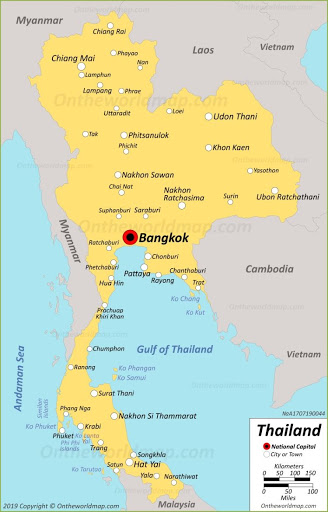
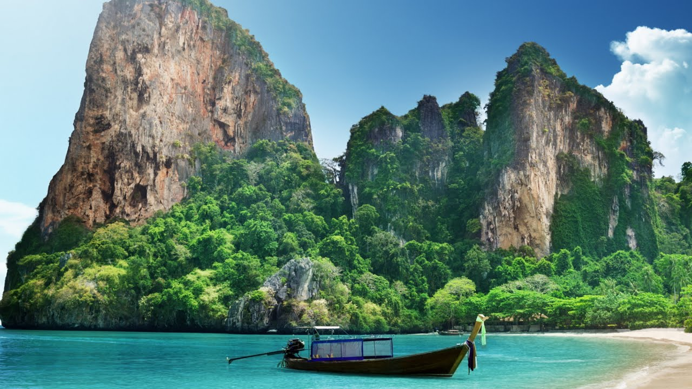

Thailand

Thông tin cơ bản:
Khí hậu
Khí hậu Thái Lan chịu ảnh hưởng bởi gió mùa có đặc điểm theo mùa (gió mùa tây nam và gió mùa đông bắc). Gió mùa tây nam bắt đầu từ tháng 5 đến tháng 10 được đặc trưng bởi chuyển động của không khí ấm ẩm từ Ấn Độ Dương tới Thái Lan, gây ra mưa dồi dào nhất đất nước.:2 Gió mùa đông bắc bắt đầu từ tháng 10 đến tháng 2 mang lại không khí lạnh và khô nhất Thái Lan từ Trung Quốc. Ở miền nam Thái Lan, gió mùa đông bắc mang lại thời tiết ấm áp và mưa nhiều trên bờ biển phía đông. Phần lớn Thái Lan có khí hậu "nhiệt đới ẩm và khô hoặc khí hậu thảo nguyên" loại (khí hậu xavan). Về Phía nam và đầu phía đông của miền đông có khí hậu nhiệt đới gió mùa.
Sinh thái
Thái Lan là quốc gia có nhiều loài động vật quý hiếm trên thế giới sinh sống, nổi bật nhất là hổ, voi và bò tót khổng lồ. Rất nhiều loài đang đứng trước hiểm họa diệt chủng do nạn săn trộm và phá rừng.
Voi là biểu tượng quốc gia của Thái Lan. Hiện nay số lượng voi suy giảm nghiêm trọng do nạn săn trộm voi để lấy ngà voi, và gần đây là để lấy thịt voi. Voi con thường bị bắt để sử dụng trong các điểm tham quan du lịch, mặc dù việc sử dụng chúng đã giảm kể từ khi chính phủ cấm khai thác vào năm 1989. Hiện nay số lượng cá thể voi sống trong điều kiện bị giam cầm thậm chí còn lớn hơn cả số voi còn tồn tại ngoài tự nhiên, và các nhà hoạt động môi trường cáo buộc rằng những con voi sống trong điều kiện nuôi nhốt thường bị ngược đãi